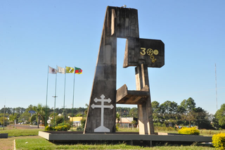

Caminho das Missões!
O roteiro de cicloturismo pelo Caminho das Missões em seu trajeto maior, 5 dias, parte de São Borja, passa por Santo Antônio das Missões, São Nicolau, São Luiz Gonzaga, São Miguel das Missões, Entre-Ijuís e termina em Santo Ângelo, em frente à Catedral. São, aproximadamente, 307 km percorrendo estradas interioranas e históricas, passando por todos os locais dos 7 Povos das Missões, entre eles Sítios Arqueológicos Nacionais e Mundial. Uma experiência intensa, seja de histórica, de cultura, de superação.
Rota Missões
Região Missioneira - Foram os padres Jesuítas os primeiros desbravadores da extensa área territorial, que hoje abrange os municípios integrantes da Associação dos Municípios das Missões. Na época, a região era compreendida nos domínios espanhóis da margem esquerda do rio Uruguai.
Museu Getúlio Vargas
Localizado na Avenida Presidente Vargas, 1772, o prédio histórico que hoje em dia abriga o museu Getúlio Vargas foi construído em 1910, e serviu como residência de Getúlio Vargas, de sua esposa Darcy Sarmanho e dos 5 filhos do casal. A casa museu traz em si a arquitetura característica do século XIX, com o assoalho de madeiras largas, paredes grossas e o teto alto, além de um acervo repleto de histórias do ex-presidente, o que proporciona aos visitantes dar uma volta ao passado
Cais do Porto
O Cais do Porto está situado no bairro do Passo, as margens do Rio Uruguai e é uma das opção de lazer mais atraente da cidade pois dispõe de um belíssimo nascer e pôr do sol, além de diversos bares conhecidos por servir o melhor peixe da região. No local também acontecem eventos tradicionais como o famoso concurso de marchinhas para carnaval, o concurso de bandas escolares para o 7 de setembro, as homenagens e finalização das procissões de Iemanjá e Nossa Senhora dos Navegantes, dentre outras atrações que são promovidas pela Prefeitura Municipal.
Monumento Tricentenário
A cidade de São Borja foi fundada em 1682 e este monumento foi inaugurado em 1982, em homenagem aos 300 anos do município. O monumento localiza-se próximo à rodoviária, em uma das ruas de entrada da cidade, Rua Eurico Batista da Silva.